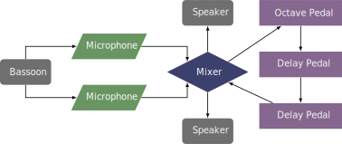

This piece was composed in 2021 by Tawnie Olson as a commission by the International Double Reed Society for Rachael Elliott. This piece can be obtained by contacting the composer at her website.
This piece requires two delay pedals and an octave pedal, although the two delays are never active at the same time, so if the settings could easily be adjusted through presets, one delay pedal could work. All of these are fairly standard effects in multieffects pedals, so one of those would be sufficient for this piece. The first delay is set to a single eighth note repeat, at the tempo marking of a quarter note equal to eighty-eight beats per minute (or about 340 milliseconds). The second delay is set to the same speed, but with enough feedback to hear about five repeats. The octave pedal is set to shift the signal down an octave. The composer also encourages the performer to use audio software if it achieves the same results.
In Rachael Elliott's performance, she used two microphones for the amplification and sent the signal to the effects pedals with a mixer, using the aux send function of the mixer. An electric bocal would certainly simplify the setup—effectively eliminating the need for a mixer—but the change in its tone may be more noticeable in this piece than others as there are no modifications to the sound other than the octave shift.
A possible setup with microphones is shown below. 
The technical aspects of this piece are well within the reach of an undergraduate student. The range (to high C) and wide leaps are probably the most difficult aspects. There are a couple of multiphonics and glissandi between notes, but these should not pose much difficulty. The electronics for this piece are not too demanding, although near the end there is some quick toggling of the octave effect on almost every beat. Most of the time the delay is turned on and stays on for an extended passage. This would be a great piece for an undergraduate student to begin working with effects pedals.
This piece is easy to listen to and mostly consists of notes in a pentatonic scale. The delays and rhythms are engaging and driving. This piece would be great for any audience.
©2025 by Benjamin Bradshaw
Logo ©2025 by Hannah Bradshaw